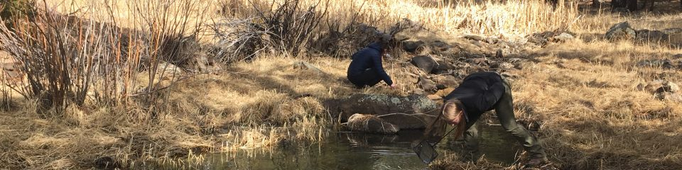

SES Alumni
Connecting Our Community
Stay connected with your NAU colleagues and current students in SES programs. Our alumni apply their skills to address problems in a range of sectors including industry, government, education, and non-profit organizations.

Our Alumni Community
The School of Earth and Sustainability has graduated hundreds of students who have gone on to successful careers across diverse sectors. Our alumni are making significant contributions to scientific research, environmental policy, education, consulting, and public service around the world.
Industry
Environmental consulting, mining, energy, water resources, and technology sectors
Government
Federal and state agencies, natural resource management, environmental protection
Education
Teaching and research positions at universities, community colleges, and K-12 schools
Non-Profit Organizations
Conservation organizations, environmental advocacy, community development
Research & Academia
Research institutions, national laboratories, graduate programs
Alumni by Program
Our graduates represent diverse academic backgrounds within Earth and sustainability sciences:
Geology Alumni
Our geology graduates work in diverse fields including:
- Environmental consulting and remediation
- Natural resource exploration and extraction
- Hydrogeology and groundwater management
- Geotechnical engineering support
- Government agency research and monitoring
- Academic research and teaching
Environmental Sciences and Sustainability Studies Alumni
Environmental Sciences and Sustainability Studies graduates pursue careers in:
- Environmental impact assessment and mitigation
- Sustainability consulting and green business
- Climate change adaptation and mitigation
- Environmental education and outreach
- Policy analysis and development
- Conservation and natural resource management
Climate Science and Solutions Alumni
Our Climate Science and Solutions program graduates are working on:
- Climate data analysis and modeling
- Climate risk assessment for businesses and communities
- Renewable energy project development
- Climate policy implementation
- Carbon accounting and emissions management
- Climate adaptation planning
Field Experiences and Connections
One of the hallmarks of SES education is our commitment to field-based learning. Our alumni often reflect on transformative field experiences that shaped their careers and built lasting professional networks.
Field experiences like summer research trips, capstone projects, and collaborative research with faculty provide students with hands-on skills and real-world applications of their classroom learning. These experiences often lead to job opportunities, graduate school connections, and lifelong professional relationships.
"The field experiences in SES didn't just teach me technical skills - they showed me how to work as part of a team, think critically about complex environmental problems, and communicate science to diverse audiences."*
— SES Alumni Reflection
SES alumni, graduate students, and faculty exploring field sites during summer research experiences.
Stay Connected
🤝 Join Our Alumni Network
We encourage all SES alumni to stay connected with the school and with each other. Whether you're looking to:
- Mentor current students
- Share job opportunities
- Collaborate on research projects
- Attend alumni events
- Support current students and programs
We want to hear from you!
Update Your Information
Help us keep our alumni database current by updating your contact information and career details. This helps us:
- Connect you with other alumni in your field
- Share relevant job opportunities
- Invite you to networking events and guest lectures
- Showcase alumni success stories
Social Media and Online Presence
Connect with SES and fellow alumni through our social media channels:
- Facebook: Stay updated on school news and alumni achievements
- LinkedIn: Professional networking and career opportunities
- Instagram: Behind-the-scenes looks at current research and student life
- YouTube: Research presentations and field experience videos
Contact Us
School of Earth and Sustainability
Email: SES.Admin@nau.edu
Phone: 928-523-9333
Address:
Room A108, Building 11, Ashurst
624 S Knoles Dr
Flagstaff, AZ 86011
Alumni Services
For alumni-specific inquiries including:
- Updating your contact information
- Sharing career updates and achievements
- Volunteering opportunities
- Mentorship programs
- Event planning and participation
Please reach out to our administrative team.